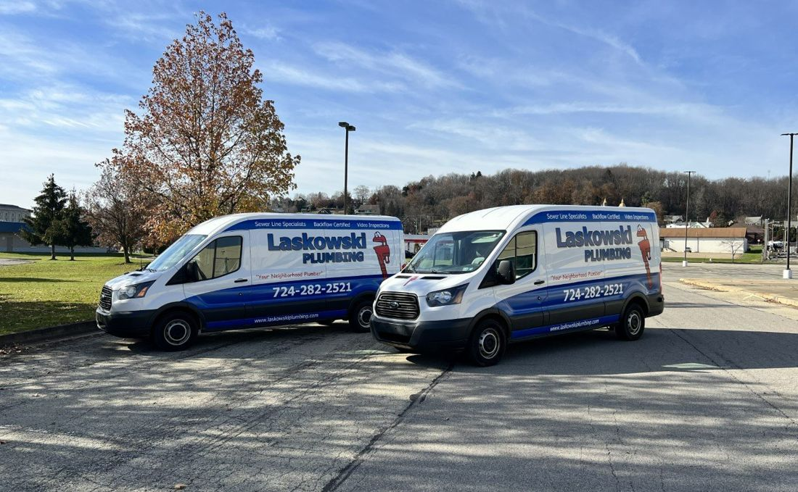
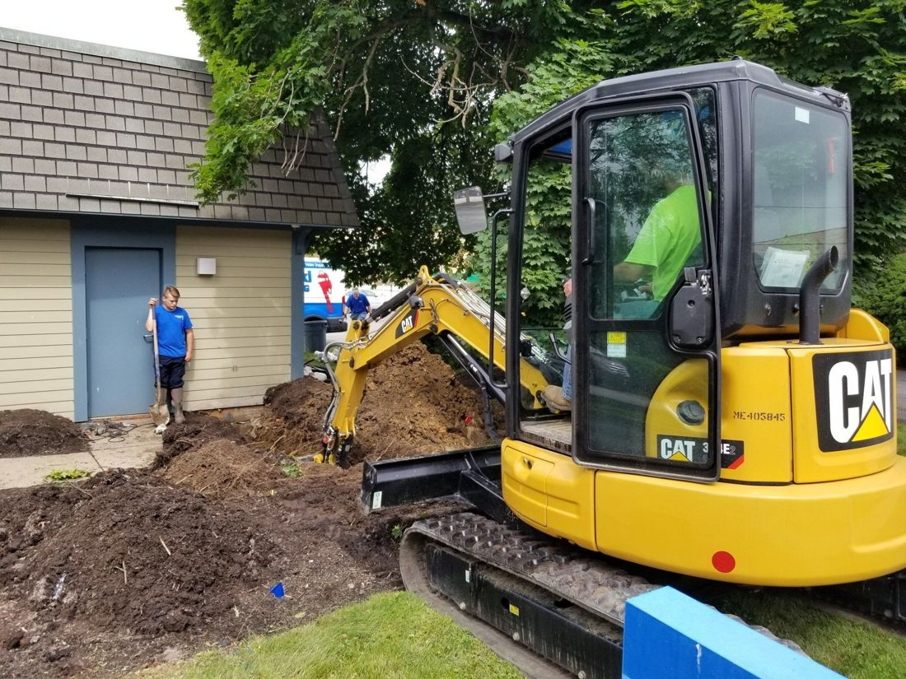
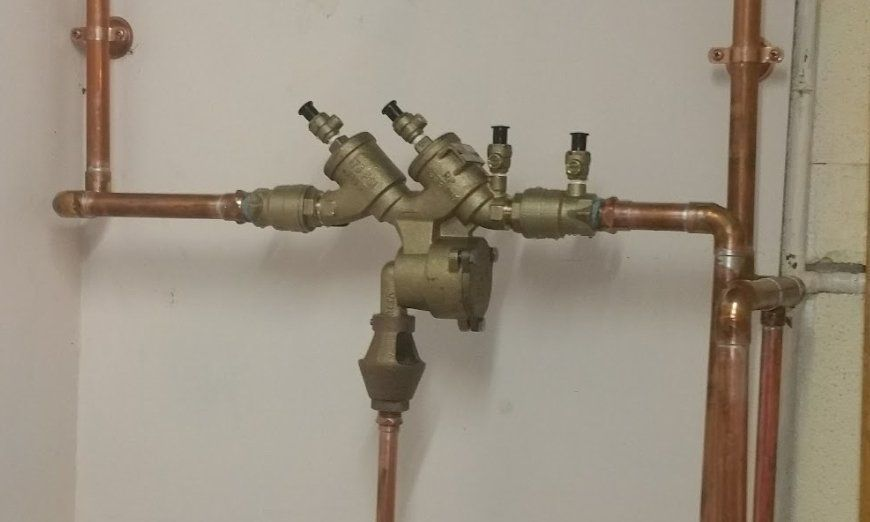
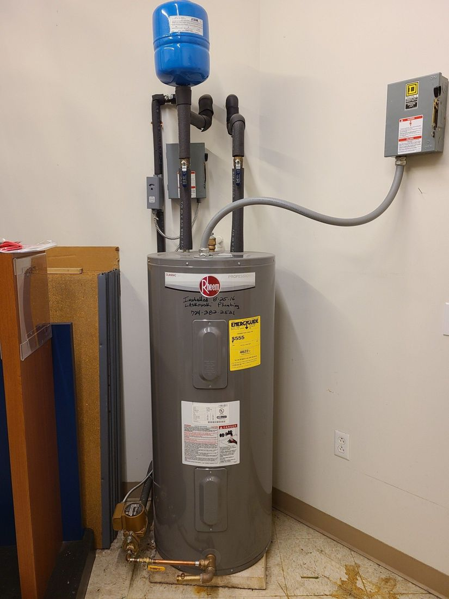

Plumber in Butler, PA · Since 1997
Registered master plumbers and a 24/7 phone line for repairs, drains, sewer and water lines, backflow and water heaters across Butler County and the Pittsburgh area.
Our trucks, our crew and our equipment, from the Laskowski Plumbing site.




Residential and commercial repairs, service and maintenance, from a dripping faucet to a brand-new sewer line.
A burst pipe flooding your home doesn't wait, and neither do we. Call any time and a professional arrives as soon as possible to assess it and get to work.
We excavate properly and build a brand-new piping system. Gas lines are Gastite only, with FlashShield lightning protection.
High-pressure water clears grease, scale and debris when snaking won't. A drain camera and pipe locator find the problem, and its depth to the inch, before anyone digs.
Backflows must be tested every year, and every commercial property needs one. As ASSE certified testers, we test, repair and replace them.
Gas, electric and propane installation and replacement, sized to your house, your household and how much water you use.
We don't just tell our customers when they have broken or obstructed pipes. We show them.
We'll never disrupt your yard unless it's absolutely necessary, and only as much as we need to.
Jim believes personal attention to customers is the key to the business. It's how it's run.
Up-to-date equipment for inspection, jetting and line work, at reasonable prices.
Jim Laskowski runs Laskowski Plumbing from Beech Road in Butler, serving all of Butler County and the surrounding Pittsburgh area with residential and commercial plumbing.
Steve has been on the team since 1999 and is a registered master plumber. Dana runs billing and supplier accounts, and Jim and Dana's son Cameron is training as an apprentice.
Based in Butler and serving the county and the north Pittsburgh area.
Call the 24/7 line to schedule a service call or get help with an emergency.